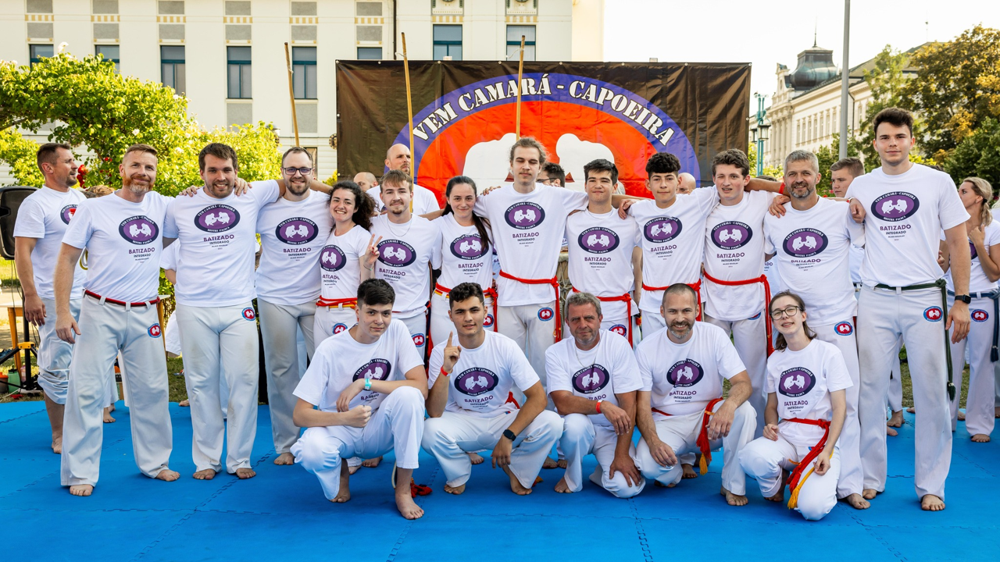

Capoeire se věnuji desátým rokem. Jedná se o brazilské bojové umění, u kterého jde o vytvoření hry a ne o boj. Sport zahrnuje nejenom pohyb, ale i hraní na hudební nástroje, akrobacii a tanec. S capoeirou nezačínají jenom děti v útlém věku, ale i dospělí. I přesto, že se nejedná o týmový sport, tak všichni se snaží navzájem podporovat a pomáhat si.
Soutěží se většinou párkrát do roka například na Mistrovství České republiky, a nebo se jezdí na různé soutěže do zahraničí. Zatím bohužel ze závodů nemám žádné extra úspěchy.
V capoeire se určují zkušenosti jednotlivce podle úrovně pásku, které dávají trenéři jednou ročně na páskování. Tréninky máme 3 týdně hodinu a půl, o víkendu jsou potom někdy semináře, a nebo již zmíněné páskování. V létě se potom pořádají soustředění jak dětské v Doksech, tak i pro dospělé v Rakouském městě Klagenfurt, kde se většinou spí v kempu ve stanech.
Také se s capoeirou zúčastňujeme mnoha akcí, jako byla například na začátku školního roku představení sportů na stadioně v Mladé Boleslavi, kde jsme se také zúčastnily otužování.
